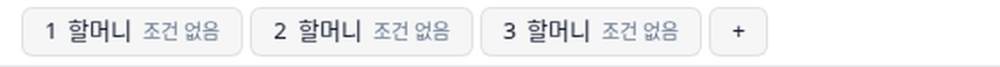
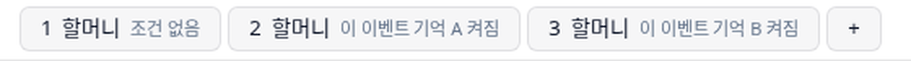
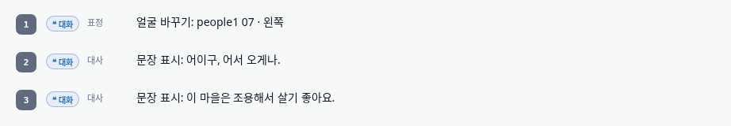
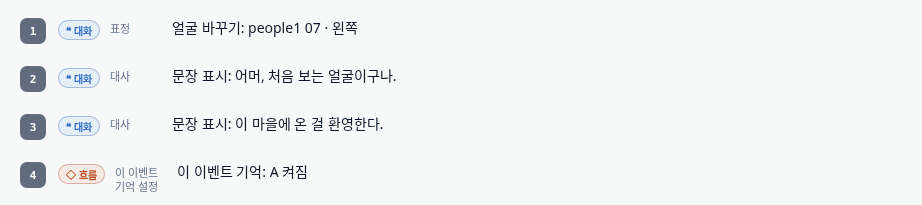
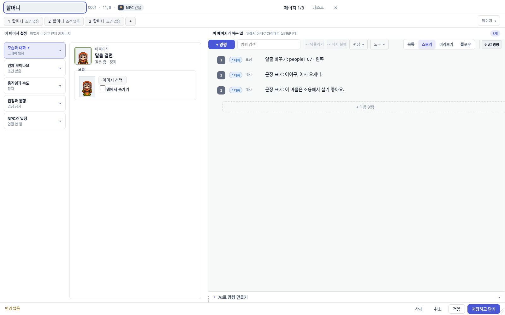
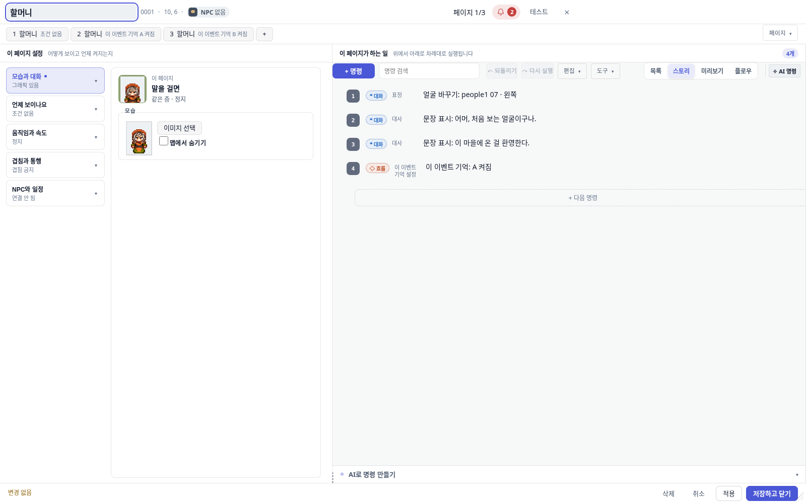

2026-08-30 · 브랜치 agent/ai-event-page-semantics · PR #365 → 373 · 상태 병합 완료 (dd6f51ef)
AI 에게 «말 걸 때마다 다른 대사를 하는 NPC» 를 시키면, 대사를 페이지 여러 장에 나눠 담았습니다. 그런데 이 엔진은 페이지를 한 번에 딱 한 장만 켭니다. 그래서 나머지는 만들어도 없는 것과 같았습니다. AI 가 이 규칙을 아예 몰랐던 것이 원인이고, 알려줬습니다. 고치는 과정에서 편집기 자체가 같은 실수를 하고 있던 곳 2군데도 찾아서 함께 고쳤습니다.
신고 내용은 이랬습니다. «랜덤하게 대사 치는 NPC 를 만들라고 했는데 여러 페이지를 만들어놓기만 해서 1페이지만 나온다.»
확인해 보니 절반은 맞고 절반은 달랐습니다. 여러 페이지를 만들어놓기만 한 것은 사실이었습니다. 다만 실제로 나오던 것은 1페이지가 아니라 마지막 페이지였습니다. 이 엔진은 페이지를 뒤에서부터 훑기 때문입니다. 어느 쪽이든 결과는 같습니다 — 나머지 페이지는 죽은 데이터입니다.
그리고 «랜덤» 은 애초에 페이지로 만들 수 있는 게 아니었습니다. AI 는 페이지를 «대사 후보 목록» 으로 착각하고 있었습니다.
이 엔진의 이벤트 페이지는 «상태별 얼굴» 입니다. «대사 후보» 도 «순서대로 재생되는 장면» 도 아닙니다.
규칙은 딱 하나입니다. 이벤트에 페이지가 몇 장이든, 게임은 맨 뒤 페이지부터 거꾸로 보면서 «등장 조건이 다 맞는 첫 페이지» 하나만 켭니다. 나머지는 없는 것처럼 무시합니다.
그래서 이렇게 됩니다.




AI 에게 주는 작업 수칙 24개를 다 뒤졌는데 «페이지는 한 번에 한 장» 이라는 말이 없었습니다. 더 나쁜 건 8번 수칙이 이렇게 적혀 있었다는 겁니다 — «분기 대사로 페이지를 풍부하게 구성하세요». 즉 규칙을 안 알려준 채, 정확히 틀린 방향을 권장하고 있었습니다.
고침: 페이지 규칙 설명을 프롬프트에 넣었습니다. 그것도 «예산 밖 고정 자리» 에 넣었습니다 — 대화가 길어지면 프롬프트를 잘라내는데, 이 설명이 잘리면 AI 가 다시 죽은 페이지를 만들기 때문입니다. 8번 수칙은 «한 페이지 안을 풍부하게» 로 고쳤습니다.
«이 조건들을 쓸 수 있다» 고 AI 에게 알려주는 명세에서, 조건 칸이 실수로 명령 칸의 명세를 가리키고 있었습니다. 옆에 조건용 명세가 멀쩡히 있는데도요. 그래서 AI 가 본 «쓸 수 있는 조건 목록» 은 명령어까지 뒤섞인 잡탕이었습니다.
게다가 그 조건 목록은 손으로 베껴 쓴 것이라 실제 조건 하나(run)가 빠져 있었습니다.
이제 목록을 손으로 베끼지 않고 원본에서 그대로 가져옵니다.
페이지가 죽어도 편집기·검사기·진단 도구 전부 침묵했습니다. 만든 사람은 게임을 켜서 «왜 이 대사가 안 나오지» 할 때까지 알 수 없었습니다.
고침: 판정기를 만들어 네 곳에 붙였습니다 — AI 가 만드는 즉시 받는 경고, 프로젝트 검사, 그리고 «이 이벤트가 왜 안 나오나» 진단.
①을 고친 뒤 다시 시켜보니 AI 가 페이지를 제대로 나눴습니다. 그런데 «기억 A 켜기» 명령을 하나도 안 넣어서 2·3페이지가 영원히 잠겼습니다. 조건은 맞았는데 결과는 똑같이 죽은 겁니다. 그래서 이것도 같이 잡게 했습니다.
make_villager(주민 만들기)는 대사를 2줄 주면 조건 없는 페이지 3장을 만들었습니다.
«대사 페이지 3개 만들었습니다» 라고 보고하면서 실제로는 마지막 1줄만 나왔습니다.
AI 탓이 아니라 도구 자체의 버그였고, 신고된 증상과 똑같습니다.
말로만 «고쳤다» 고 하지 않기 위해, 실제 사용자가 말하는 문장을 그대로 AI 에게 먹이고 나온 결과물을 기계로 채점했습니다. 편집기의 진짜 AI 처리 경로를 그대로 탑니다.
같은 문장을 고치기 전 코드와 고친 후 코드에 각각 넣어 비교했습니다. 채점 기준도 양쪽 동일한 자를 씁니다.
| 시켜본 것 | 수정 전 | 수정 후 |
|---|---|---|
| 말 걸 때마다 다음 대사 «처음엔 인사, 두 번째엔 손녀 얘기, 세 번째부터 작별» | 페이지 3장, 전부 조건 없음 → 2장 죽음. 마지막 작별 인사만 나옴 | 1장=기본 +«기억 A 켜기» 2장=«A 켜짐» +«B 켜기» 3장=«B 켜짐» → 죽은 페이지 0 |
| 랜덤 대사 «말 걸 때마다 대사가 랜덤으로» | 이벤트를 아예 만들지 못함 | 1페이지 안에서 가중 분기 + 대사 갈래 4개 |
| 밤에만 다른 대사 «낮엔 쉬고, 밤엔 순찰 얘기» | 1장=기본, 2장=«밤» 조건 (이건 원래도 됨) | 동일 + 스스로 진단 도구로 검증까지 함 |


현재 규칙(마지막 페이지 우선)이 맞습니다. 안 바꿨습니다. 이 부분은 생각이 다릅니다.
이유는 이렇습니다. 표준 저작 방식이 «1페이지에 기본을 두고, 뒤에 조건 페이지를 덧붙여 덮는다» 예요. 1페이지 우선으로 뒤집으면 기존 프로젝트의 모든 «진행되면 바뀌는» 페이지가 한꺼번에 죽습니다. 퀘스트를 깨도 NPC 대사가 안 바뀌게 됩니다.
그리고 애초에 증상의 원인이 규칙이 아니었습니다. 조건 없는 페이지를 여러 장 만든 게 원인입니다. 조건을 제대로 걸면 지금 규칙에서 정확히 의도대로 동작합니다 — 위 표의 «고친 후» 가 그 증거입니다.
덧붙이면, 실제로 나오던 것도 1페이지가 아니라 마지막 페이지였습니다. 그래서 «1페이지 우선으로 만들자» 는 방향은 증상과도 맞지 않았습니다.
부분적으로 했고, 그마저 잘못된 명세를 보고 있었습니다. 지금은 제대로 이해합니다.
조건 자체는 쓸 줄 알았습니다 — 실제로 «밤에만» 조건은 고치기 전에도 제대로 걸었습니다. 문제는 두 가지였습니다.
고친 뒤 라이브 테스트에서 AI 가 쓴 조건: timePhase:night(밤), selfSwitch:A·
selfSwitch:B(이벤트 기억). 조건과 «켜기» 를 짝지어 쓰는 것까지 했습니다.
페이지 규칙을 프롬프트의 안 잘리는 자리에 넣었습니다. 랜덤 대사의 정답 방법(가중 분기 + 갈래)과 단계 진행 방법(조건과 켜기는 한 쌍)도 함께 적었습니다.
판정 두 개를 만들었습니다.
둘 다 오탐(멀쩡한 걸 죽었다고 하는 것)을 최우선으로 피하도록 보수적으로 만들었습니다. 남의 작업물을 «죽었다» 고 잘못 말하는 게 이 기능의 최악 실패니까요. 실제로 적대적 리뷰가 오탐 2건을 잡아냈고 둘 다 고쳤습니다.
tsc --noEmit 클린(종료 코드 0).«회귀 없음» 을 어떻게 확인했나 (여기서 한 번 헛짚었습니다)
게이트가 «새 실패 7건» 이라고 했습니다. 처음엔 기준 커밋을 잘못 골라 비교했고, 그래서 «내 탓 아님»
판정이 근거가 약했습니다. 다시 병합 대상인 origin/main 을 따로 체크아웃해서
같은 테스트를 돌렸더니 실패 파일과 줄까지 완전히 동일했습니다. 저장소 기준선 자체가 낡아서
생긴 차이였고, 이 변경과 무관합니다.
1차 리뷰가 잡은 블로커 2건 — 둘 다 «멀쩡한 페이지를 죽었다고 잘못 말하는» 오탐이었습니다.
2차 리뷰는 승인했고 7건 전부 해결 확인. 승인과 함께 남긴 비차단 지적 중, 제가 이 브랜치에서 새로 만든 2건은 병합 전에 고쳤습니다 — 같은 결함이 두 번 보고되던 중복(하나가 둘로 보임), 그리고 순환 참조 객체에서 프로젝트 로드가 통째로 실패할 수 있던 재귀 방어.
의도적으로 안 고친 것도 있습니다. 판정을 더 엄격하게 좁히자는 지적은 거절했습니다 — 좁히면 실제 «켜기» 를 놓쳐서 오탐이 생길 위험이 있고, 현재는 안전한 방향(놓치더라도 잘못 말하지 않음)으로 기울어 있습니다.
| 파일 | 무엇을 |
|---|---|
src/ai/eventPageSemantics.ts | AI 가 읽는 페이지 규칙 설명. 프롬프트가 잘려도 남는 자리에 고정 |
src/ai/contextBuilder.ts | 위 설명을 고정 자리에 끼우고, 페이지를 늘리라던 8번 수칙 수정 |
src/editor/tools/schemaShapes.ts | «등장 조건» 명세가 명령 명세를 가리키던 것 교정 + 조건 목록을 원본에서 가져오게 |
src/project/eventPageShadow.ts | 신규 — 죽은 페이지·잠긴 페이지 판정(순수 함수) |
src/editor/tools/eventTools.ts | AI 가 만드는 즉시 경고 + 주민 만들기의 죽은 페이지 결함 수정 |
src/project/lint/projectLint.ts | 프로젝트 검사에 죽은 페이지·잠긴 페이지 항목 추가 |
src/project/storyEventExplain.ts | «왜 안 나오나» 진단이 죽은/잠긴 페이지를 지목 |
src/editor/content/skyStairMaps.ts | 자동 이벤트 페이지 순서 교정(걸쇠가 안 걸리던 결함) |
src/editor/tools/eventCompile.ts | 중복 경고 제거 — 판정을 한 곳으로 모음 |
test/aiEventPageSemantics.test.ts | 신규 계약 테스트 31건 |
test/e2e/_ai-event-page-evidence.spec.ts | 신규 — 실제 편집기 스크린샷 증거 캡처 |
scripts/ai-event-page-live-test.mts | 신규 — 실제 프롬프트로 AI 를 돌려 결과를 채점하는 하네스 |
openwiki/editor-event-authoring.md | 위 내용 전부 기록(다음 사람이 같은 실수를 안 하도록) |
set_shop_stock 등)이 아직 이 진단 결과를
버립니다. 그 도구들의 결과 배관을 함께 바꿔야 해서 이번 범위에서 뺐습니다.